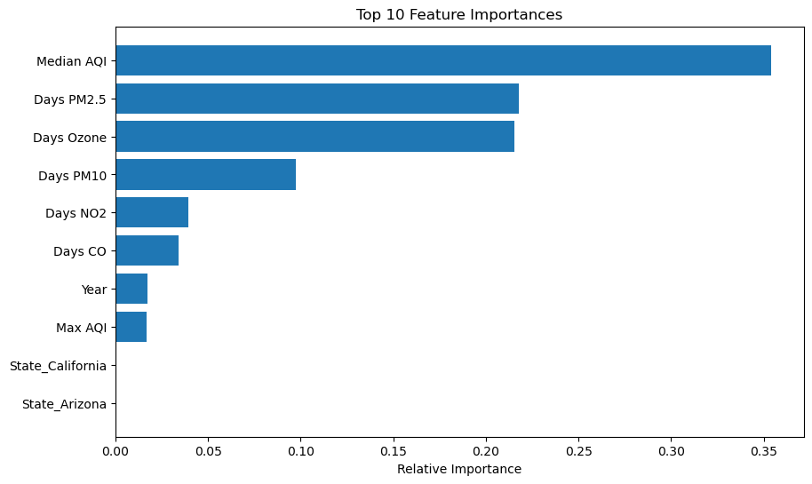
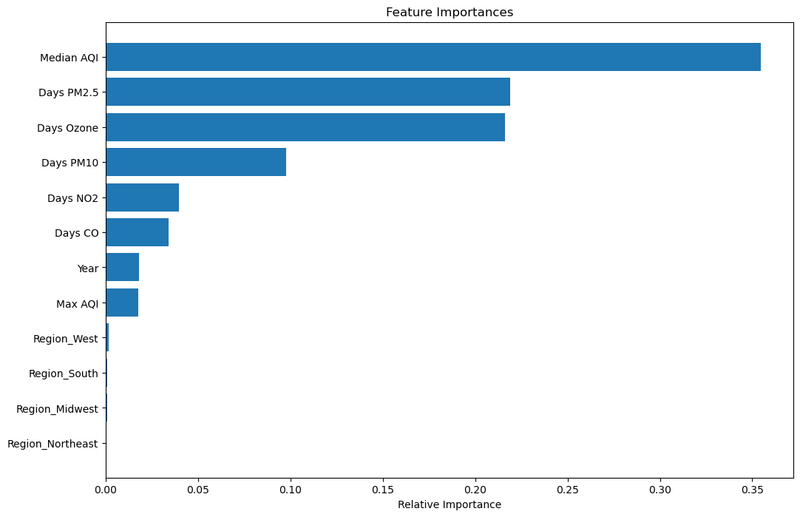

US Air Quality Analysis
Overall Introduction
Air quality is a pivotal environmental issue that directly
impacts public health and well-being. Every year, millions
of people worldwide are affected by poor air quality, which
is linked to a range of severe health problems. According to
the World Health Organization (WHO), the combined effects of
ambient air pollution and household air pollution are associated
with 6.7 million premature deaths annually. This highlights the
critical need for rigorous air quality management. Criteria pollutants,
including ozone (O3), nitrogen dioxide (NO2), carbon monoxide (CO),
sulfur dioxide (SO2), and particulate matter (PM2.5 and PM10), are
particularly concerning due to their prevalence and health impacts.
Exposure to high levels of these pollutants can lead to acute
respiratory problems, cardiovascular diseases, worsened asthma,
and other health issues. Specifically, WHO estimates that in 2019,
some 37% of outdoor air pollution-related premature deaths were due
to ischemic heart disease and stroke, while 18% and 23% of deaths were
due to chronic obstructive pulmonary disease and acute lower
respiratory infections respectively, and 11% were due to cancer
within the respiratory tract.
This project aims to provide a comprehensive analysis of these pollutants
in the United States from 2000 to 2023, offering insights into their
concentrations, distribution, and trends over time. By understanding
the dynamics of air quality, this study seeks to inform public policy,
contribute to environmental health research, and pave the way for effective
interventions that could dramatically reduce the health burdens associated
with air pollution.
Our sources include the World Health Organization:
Air Pollution,
Ambient Outdoor Air Pollution
and the EPA:
Air Data Basic Information.
Introduction to the data
Our analysis utilizes information from the United States Environmental
Protection Agency and the Center for Disease Control.
EPA:
We concatenated annual summary files that contain information about criteria
pollutants by county from the years 2000 up until 2023. This resulted in a
file with 25,000 rows and 18 columns. The relevant columns are listed below.
| Variable Name |
Description |
| State |
State name |
| County |
Country Name |
| Year |
Year the data was collected from |
| Days AQI |
Number of days AQI was recorded |
| Good Days |
Number of days with AQI lower than 50 |
| Moderate Days |
Number of days with AQI between 51 - 100 |
| Unhealthy Days for sensitive groups |
Number of days with AQI between 101 - 150 |
| Unhealthy Days |
Number days with AQI between 151 - 200 |
| Very Unhealthy Days |
Number of days with AQI between 201 - 300 |
| Hazardous Days |
Number of days with AQI between 301 and higher |
| Max AQI |
Highest AQI for the year |
| Median AQI |
Median AQI for the year |
| Days CO |
Number of days with any Carbon Monozide amounts higher than federal limit |
| Days NO2 |
Number of days with any Nitrogen Dioxide amounts higher than federal limit |
| Days Ozone |
Number of days with any zone amounts higher than federal limit |
| Days PM 2.5 |
Number of days with any fine particulate matter with a diameter of 2.5 ppm amounts higher than federal limit |
| Days PM 10 |
Number of days with any fine particulate matter with a diameter of 10 ppm amounts higher than federal limit |
CDC:
We used public health data report from the year 2022.
This dataset contains 2.05 million rows and 55 columns.
The four relavant columns used are shown below.
| Variable Name |
Description |
| StateAbbr |
State Abbreviation |
| MeasureID |
Health outcome being measured |
| Data_Value |
Percent of population with health outcome |
Median AQI Over Time
To begin, we created a high-level visualization that maps the changes in the
median Air Quality Index (AQI) over time across the United States. The AQI
serves as a gauge of air quality, where lower values indicate cleaner air. Our
analysis reveals that the highest median AQI occurred in 2007, while the lowest
values were observed in 2009 and 2020. The significant improvement in air quality
from 2007 to 2009 can be attributed to the 2008 financial crisis, during which
widespread job losses led to reduced commuting and, consequently, fewer emissions.
Similarly, the sharp decrease in AQI in 2020 coincided with the global COVID-19
pandemic, which saw travel restrictions and reduced economic activity contributing
to markedly cleaner air. These findings emphasize the direct impact of human
mobility and economic activity on air quality.
Heat Map of Median AQI
This interactive visualization utilizes plotly to show the median air quality
index(AQI) by state over time from 2000 to 2023. The darker the shade of red
indicates a higher AQI. By pressing the play button, the user can watch as the
median AQI changes over time by state. Using the slider, the user can go directly
to a specific year to observe as well. The user can hover over each state to see
the year, state name, and median air quality index.
From this visualization, some interesting insights are: first, the upper northwest
portion of the country tends to have better air quality compared to other regions.
The south east tends to have the poorest air quality. Another important trend to
note is that as time has passed, the western part of the country’s air quality has
gotten a bit worse. This is a reflection of increased forest fires in the western
part of the United States and as result, there are elevated levels of particulate
matter of 2.5 diameter, ozone, and nitrogen dioxide.
Feature Importance

To gain a deeper understanding of the factors predicting the number of
days with varying levels of air quality—from good to hazardous—we employed
a random forest regression model supplemented by cross-validation. During
preprocessing, we explored the impact of geographical variations by one-hot
encoding states. However, the encoded state variables did not significantly
influence the model's predictions, as reflected by their negligible feature
importances. The target variables were the count of days classified as good,
moderate, unhealthy for sensitive groups, unhealthy, and hazardous based on
air quality. The cross-validation results revealed a mean R-squared value of
0.779 and a mean MSE of approximately 50.265, indicating a robust model with
substantial predictive capabilities. 'Median AQI', 'Days PM2.5', and 'Days Ozone'
emerged as the most influential predictors, reinforcing the critical role of specific
pollutants in determining air quality. The 'Year' variable held minimal importance,
suggesting that environmental conditions on a day-to-day basis are more significant
than the specific year's data.
These results led us to reevaluate the feature selection, opting to categorize
the United States into broader regions rather than by individual states. This
approach reduced the model's complexity without sacrificing its predictive power.
The feature importance graph further highlighted that median air quality indices
and the number of days with elevated levels of PM2.5 and ozone are more indicative
of air quality than the regions, emphasizing that air quality interventions should
prioritize the management of these pollutants. As elevated levels of PM 2.5 and ozone
can occur from forest fires, air pollution and global warming, this further
corroborates the previous interactive visualization depicting how median AQI
has changed over time. By shedding light on these factors, our model directs
attention to actionable environmental policies and initiatives that could be
most effective in improving air quality.

We have also create an interactive bar plot so that
our users can select a couple of states
to compare prevalance of disease.
For our visualization using Altair, we decided to plot a bar graph that shows the
prevalence of diseases by state. We chose to visualize diseases that have a strong
positive correlation with air pollution, such as cancer, chronic asthma, chronic
heart disease, and stroke. The interactive features in this visualization include:
tooltip that shows the data value of each disease within a certain county, and a
dropdown where you can select a state. The marks and channels are bars and length.
Max AQI across US
In this visualization we try to explore the Max AQI between
states. Using width or x-axis and color we are able to see which states
have the highest AQI. It shows that California has the highest Max AQI which
is consistent with the heat map as well.
Summary and additional work
In this visualization analysis, we were able to explore the different air quality particulates
and their impact on health across the US. We noticed some patterns. There was lower AQI during
periods of less travel that occured due to financial or pandemic reasons. The northwest portion
of the US has a lower AQI compared to the rest of the country. Ozone and fine particulate matter
influence AQI the most. California Counties have the worst AQI and the highest prevalence of disease.
In the future, we would like to:
- integrate wind and temperature data
- develop specific regulatory measured based on analysis findings
- trying other ML models to yeaild better prediction results
- implement targeted interventions in areas with poor air quality
If you are interested in the project and want to share more
opinions or resource about the project, please contact:
Amulya Jayam (jayam.a@northeastern.edu)
Sarayu Pininti (pininti.s@northeastern.edu)
Krithika Natrajan (natarajan.kr@northeastern.edu)